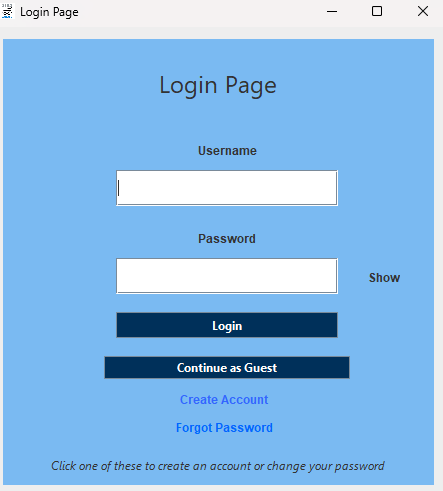
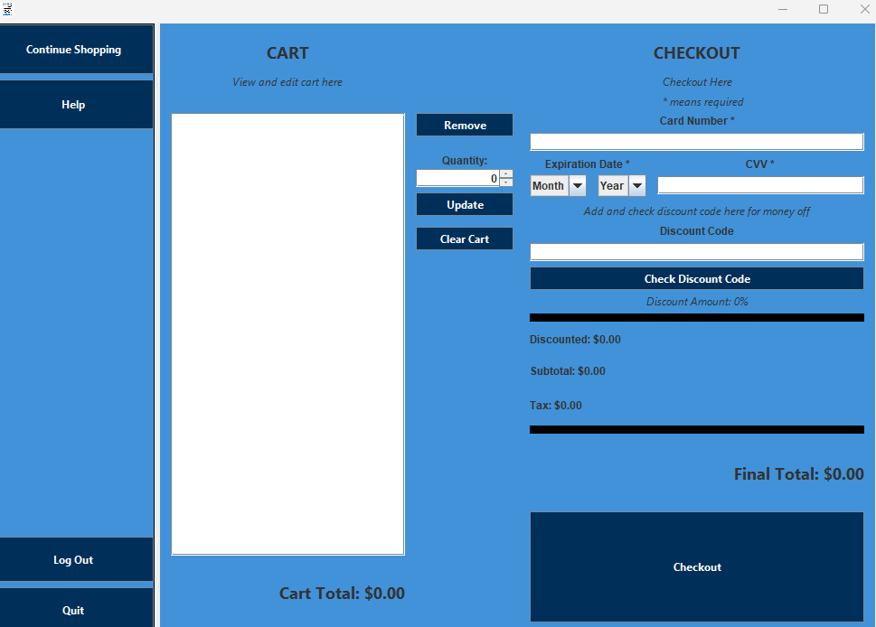
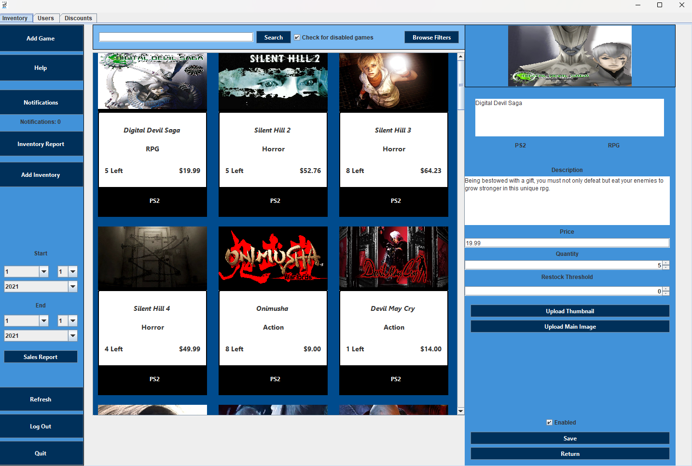

Used Games Store
For a class, I was tasked to make a feature rich application throught the whole semester. This led me to making what I like to call the used games program.
This application is meant to act as an online storefront for more local used games stores that could find having an online storefront helpful. It is packed with the features one would expect from a program like this:
- 1. Account Creation and Login 
- 2. Cart Management and the ability to make purchases 
- 3. Manager functions 
This program has a lot going into it, the list was made to just give you a brief rundown on it.
For a video demonstration check here: Link
For the master branch of the project click here: Link